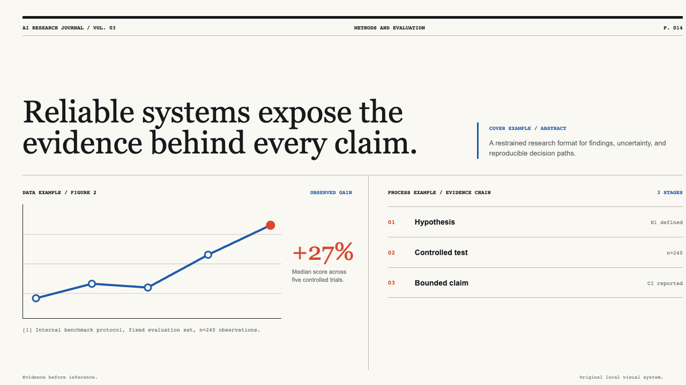
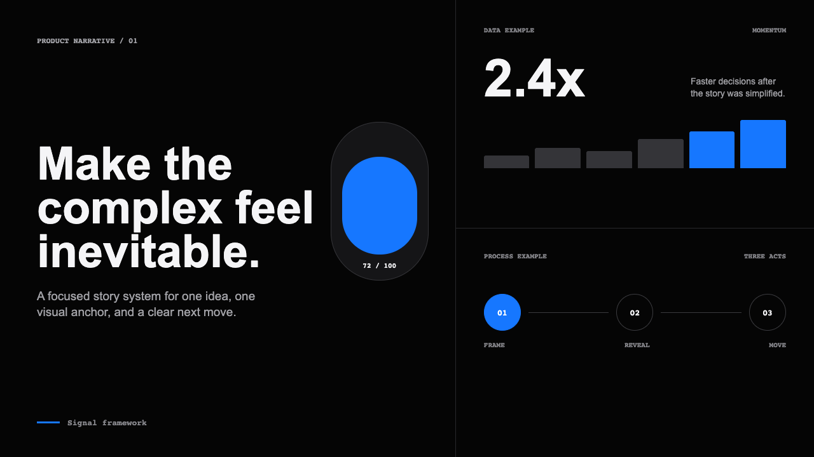
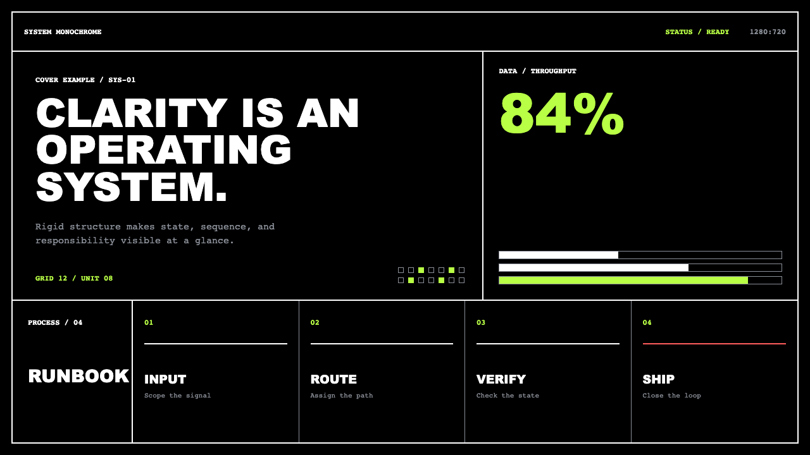
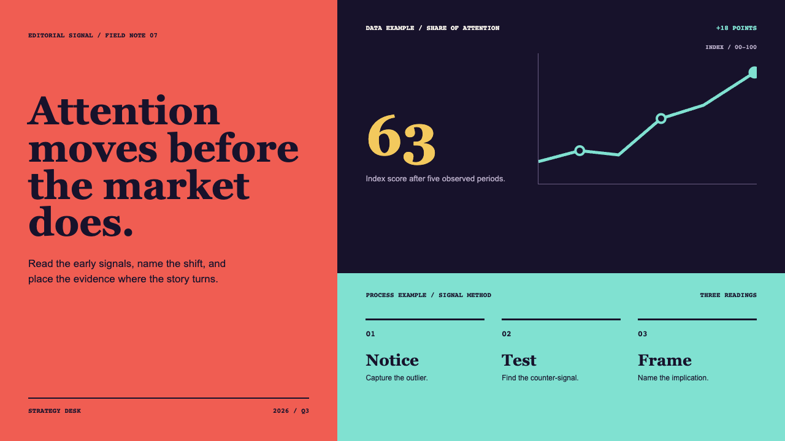
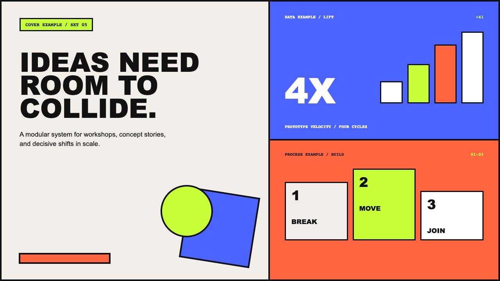

Sherry Skill for HTML / Showcase
让 AI 先问清楚，再把幻灯片做出来。
一个面向 HTML 演示文稿的可复用工作流：从需求、素材和风格，到逐页确认、局部修改和最终合并。
Editable / Offline / Reviewable
完整素材库→ 逐页大纲
→ 单文件 HTML
它怎么工作
01问清需求
02整理素材
03选择视觉
04逐章确认
05合并交付
六套视觉方向
先看图，再选风格。所有预览都在仓库内，下载后可离线查看。






一个可复用案例
示例不是为了展示一套固定模板，而是展示从内容到成品的最小闭环。